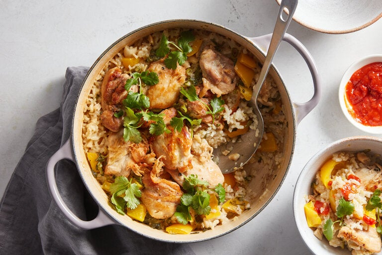

Home
Coconut Chicken Rice

What is Coconut Chicken Rice
Coconut chicken rice doesn't necessarily come from anywhere specific.
However, that doesn't mean its not tasty. This delicious dish will have
you ranting and raving to your friends about how great of a chef you are.
While this dish isn't exceptionally hard to make it does require a but of
equipment and grit to make. The dish is a comfort food featuring rich Coconut
rice infused with ginger, garlic, scallion, and textured with toasted cashews.
The chicken thighs absorb the coconut milk as they cook, which leads to a tender
meat filled with juices ready to be released. Finally, the freshly chopped cilantro
adds a bright spot to the dish, while the hot sauce gives a little kick to balance the
creamy and rich rice.
Ingredients:
Enough for 4
- 1 and a half pounds of boneless, skinless chicken thighs, each cut into 2 equals
- 1/4 cup conola oil
- 2 teaspoons kosher salt
- 1/2 teaspoon black pepper
- 2 tablespoons of minced fresh ginger
- 1 tablespoon of minced garlic
- 1 and a half cups of short-grained white rice
- 1 and 3/4 cups of low-sodium chicken broth
- 1 13.5 ounce can of full-fat coconut milk
- 1 yellow bell pepper, cored, seeded and chopped into 1/2 inch pieces
- 1/2 cup of roasted cashews, coarsely chopped
- 3 scallions, green and white pars, thinly sliced (1/2 packed cup)
- 2 tablespoons coarsely chopped cilantro
Steps:
- Heat oven to 375 degrees.
-
Rub chicken with 1 tablespoon of oil and season with 1 teaspoon of salt and 1/4
teaspoon of pepper.
-
In a large dutch overm heat 2 tablespoons of the oil over medium.
-
In two batches, brown chicken, turning halfway until no longer pink. Around
5 minutes per batch. Transfer to a plate.
-
Add the remaining 1 tablespoon oil, the ginger, and garlic to the empty pot. Stir until
fregrant, approximately 30 seconds.
- Add rice and stir until evenly coated with oil.
- Add broth, coconut milk, bell pepper, cashews, scallions and the remaining 1 teaspoon of salt
and 1/4 teaspoon of pepper. Stir to lift up any browned bits on the bottom of the pot.
- Place chicken on top of rice and vegetable mixture.
- Cover and bake until all of the liquid is absorbed, rice is tender and chicke is cooked through.
This should take about 25 minutes.
-
Allow the dish to settle, throw cilantro over the chicken and rice.
- Now enjoy!